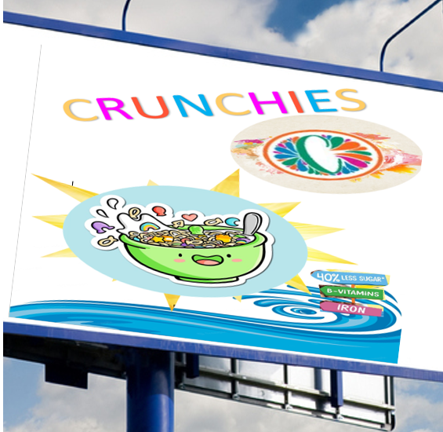

TV Advertising
- We will advertise our product in many ways like television adverting, because its an effective way to send a message and to influence consumers.
- By using this type of advertising, we can reach large audiences, especially children, more specifically on channels like Cartoon Network, Disney Channel and Nickelodeon.
- One of the major ways to advertise it is BEIN sports specially after every break in football matches, this a way to target young football audiences into craving for our delightful cereal product.
|
|
Billboard advertising
- Considering that our product is not only tasty but also healthy, we will most likely choose sports stores to advertise with the goal to encourage young consumers to eat well.
- Furthermore, we will advertise for our product on football's "perimeter advertising" billboards, which are effective for attracting young viewers
- Even though it is costly, it is profitable since passersby may see it. If young children see it and ask their legal guardian, you will not turn them down, will you?
- We will use attractive colors and deliver a strong message in these billboards.
|

|
Social Media
- Another type of advertising we use is social media, specifically with apps like Instagram and TikTok,
- Instagram and TikTok are one of the best ways to reach millions of people to help advertise our product and help grow our business.
- Its also cheap!
- A great advantage of using social media, it is inexpensive, and we are able to reach as many customers as possible worldwide.
- Since the rise of many social media apps, many of our target market will see our advertisements and promotional campaigns.
|
|